DineDistinct is a restaurant discovery and reservation platform designed to help users explore restaurants, compare dining options, and reserve tables through a seamless digital experience.
UI/UX Designer
Figma
4 Weeks
Users often struggle to discover suitable restaurants and complete reservations quickly. Existing platforms can be overwhelming and difficult to navigate.
Create an intuitive platform that simplifies restaurant discovery and reservation while providing an enjoyable user experience.
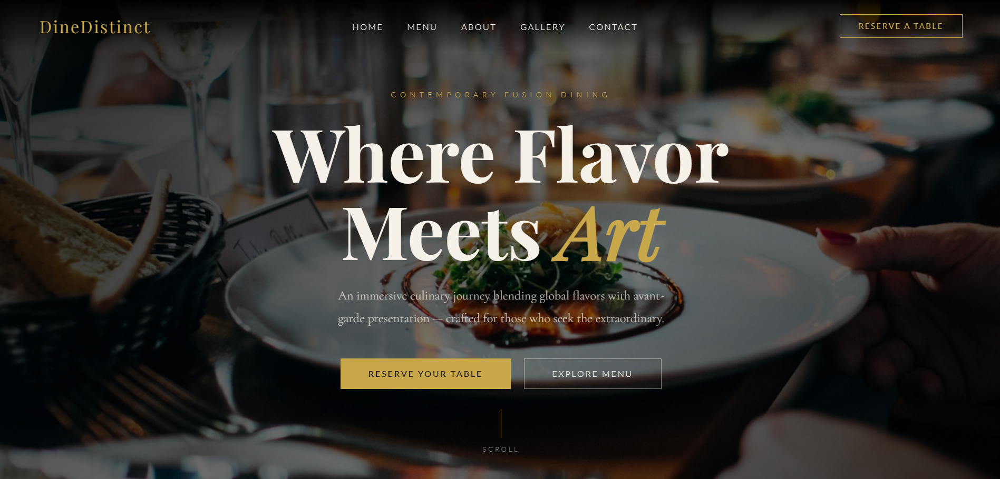
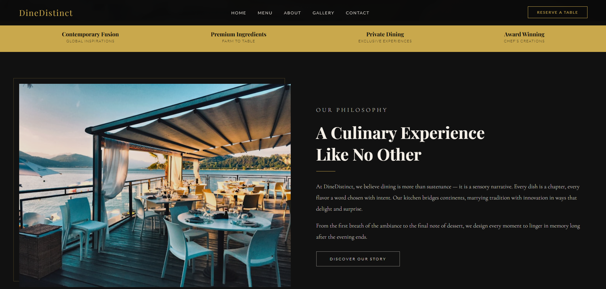
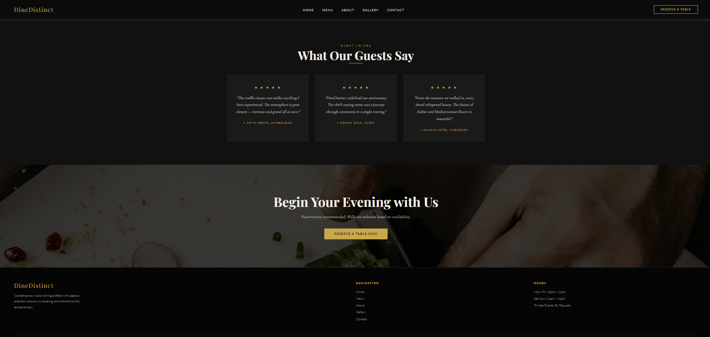
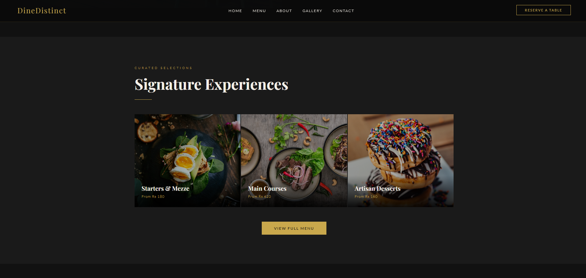
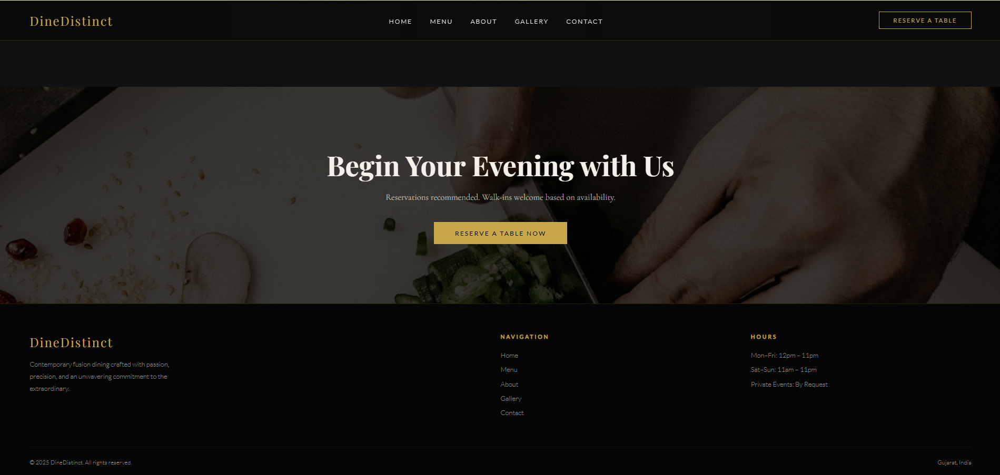
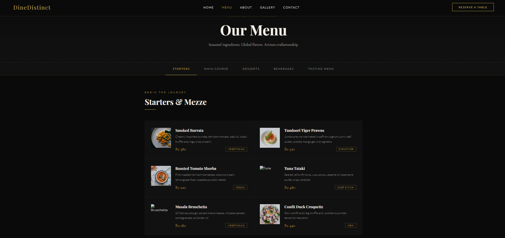
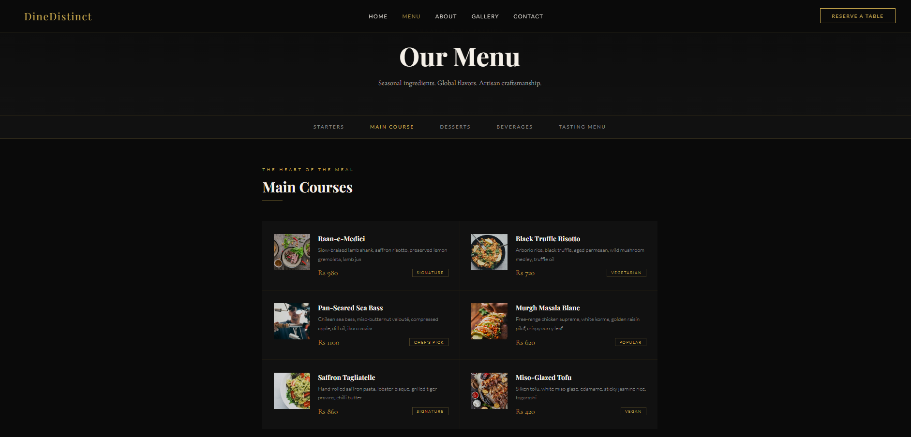
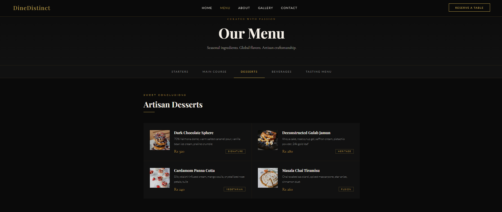
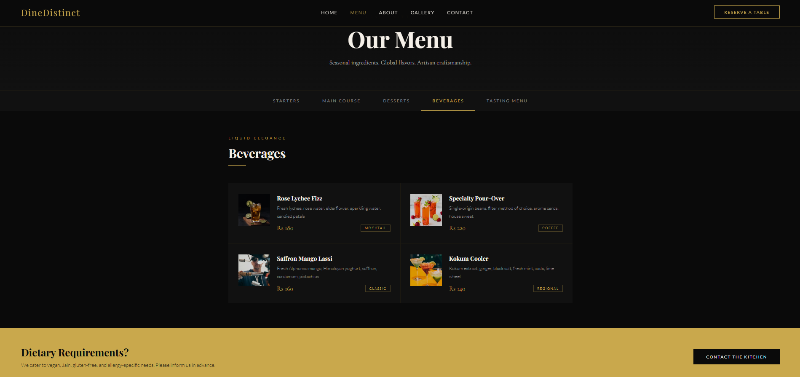
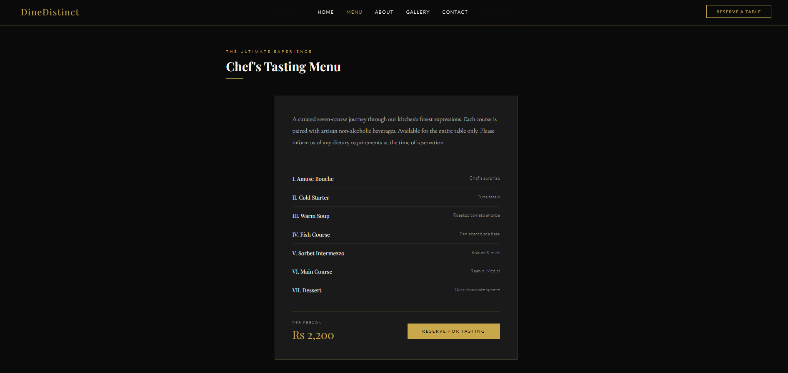
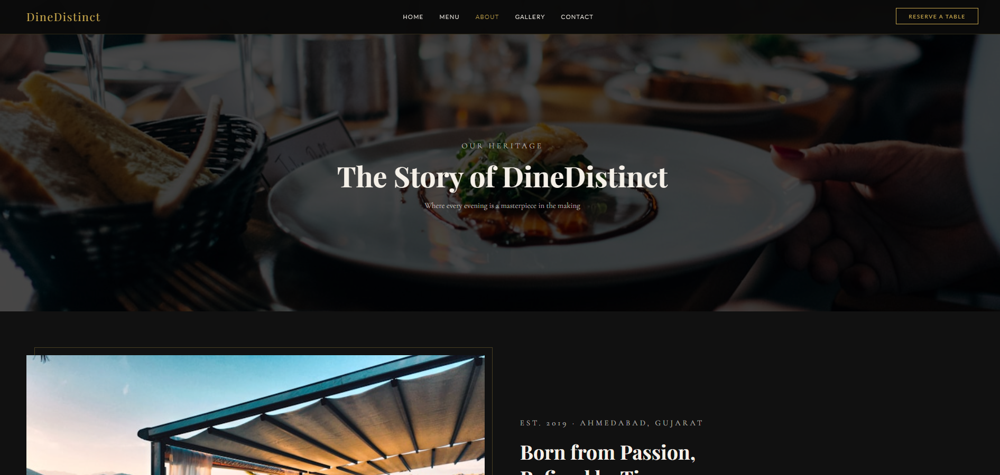
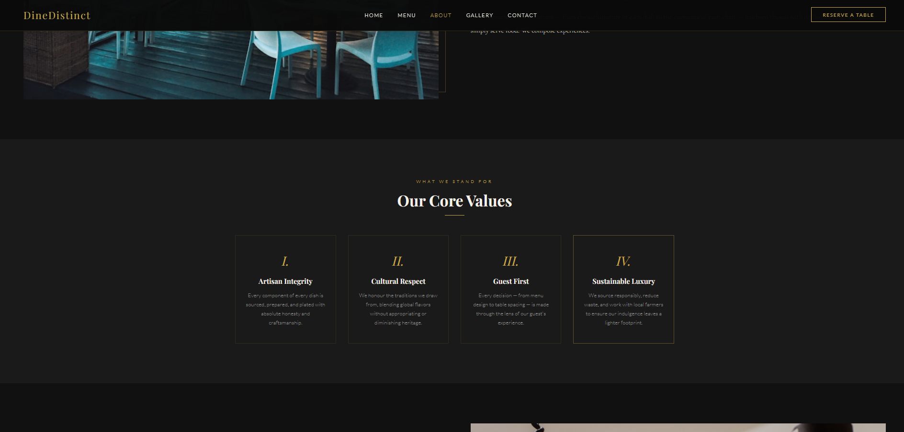
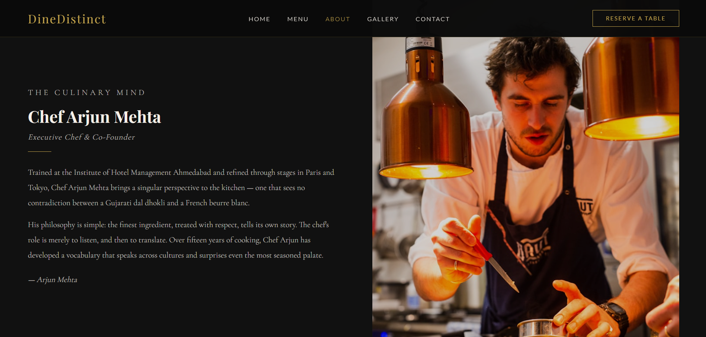
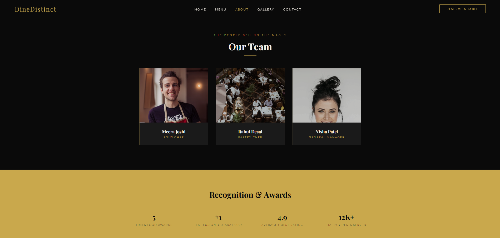
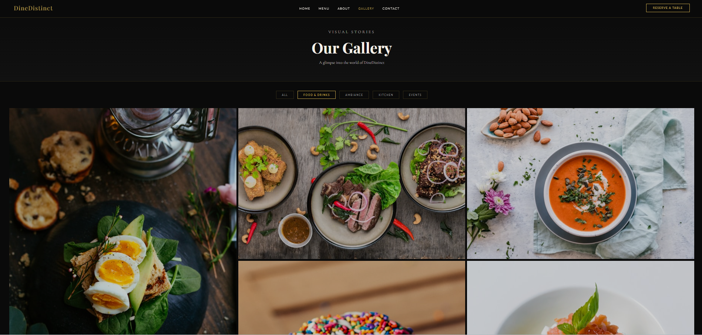
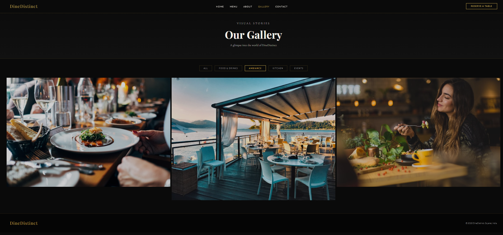
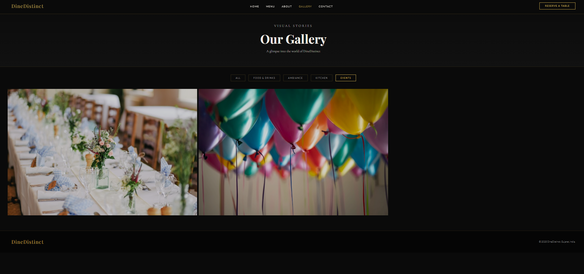
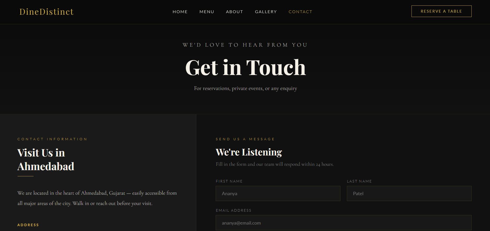
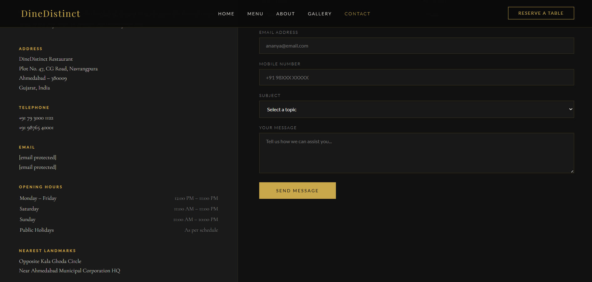
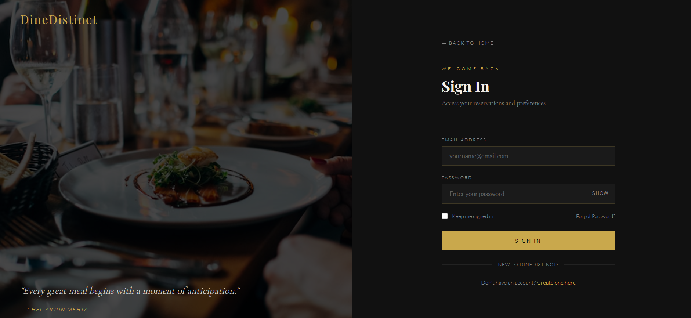
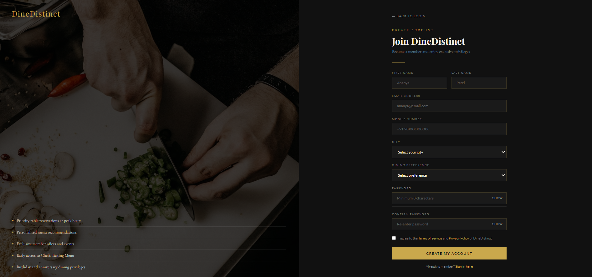
The final design provides a clean and engaging restaurant discovery experience with simplified booking flows and improved usability. Users can easily browse restaurants, view menus, and complete reservations with minimal friction.